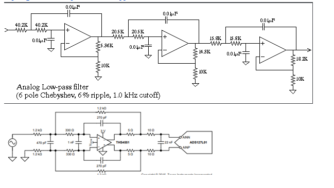
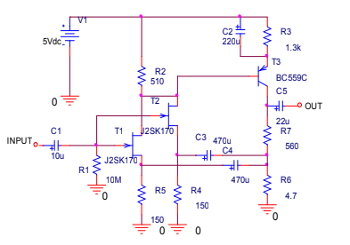
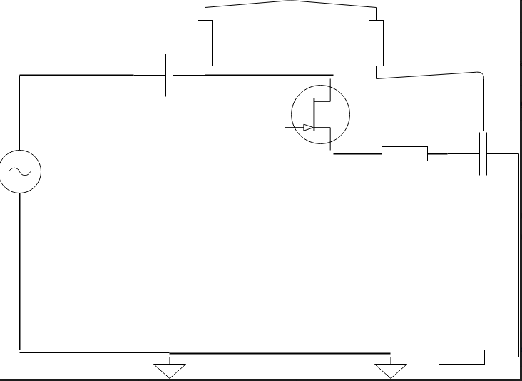
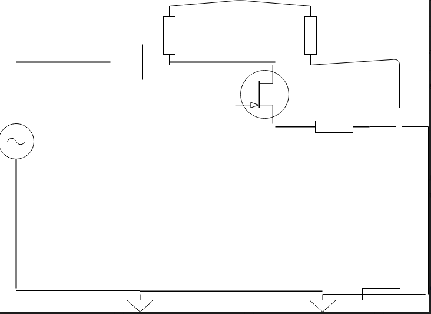

by Bryan Parada
SID:861027456 : Bpara001@ucr.edu
Journal 4: Amplifier Testing
Design
The Images show the different designs we considered to learn from. Testing them in Pspice resulted in different results compared to the documented ones. Or some schematics we were unsure what some pieces were doing. We mostly used these schematics to learn on how to build our own. The closest design I discovered that made us to finalize our final design was the jfet with capacitor following the input. We altered the first half of the jfet designed and added an op-amp since we were not receiving a linear gain. I learned that the test from pspice aren't always exact when we are reproducing on a breadboard. (Usually varies from more or less)
Images
  
